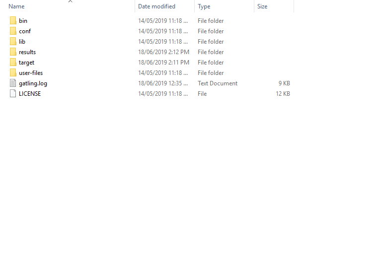
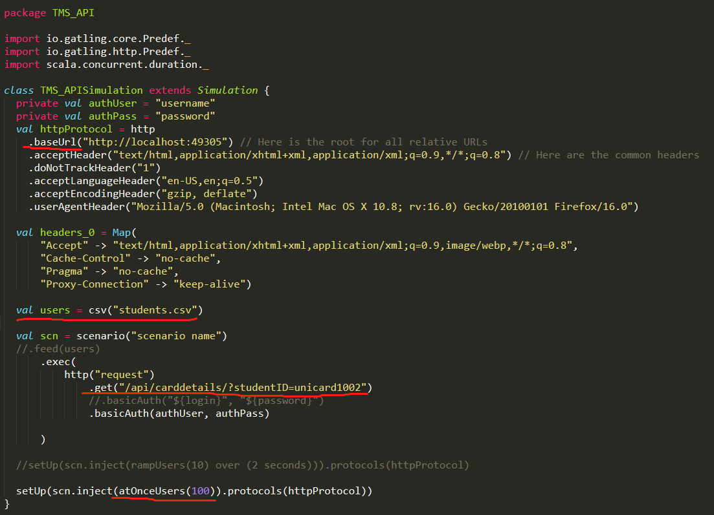
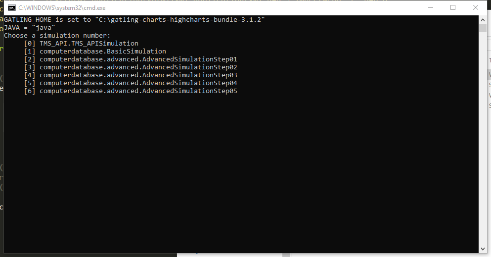
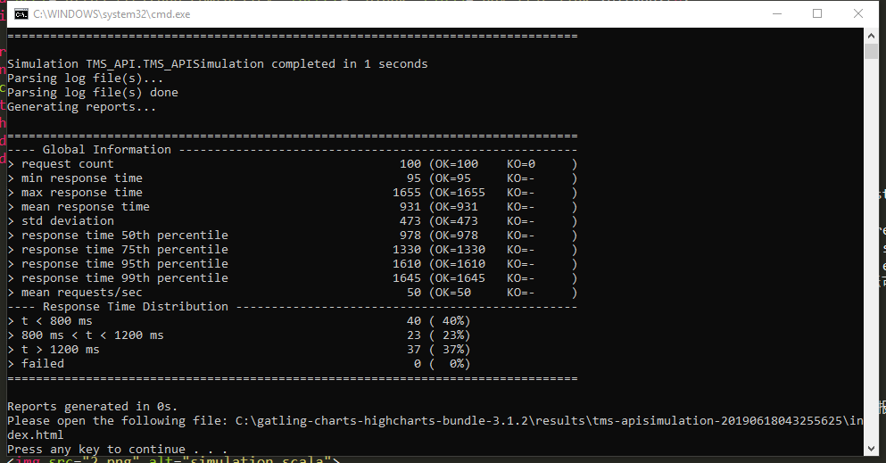
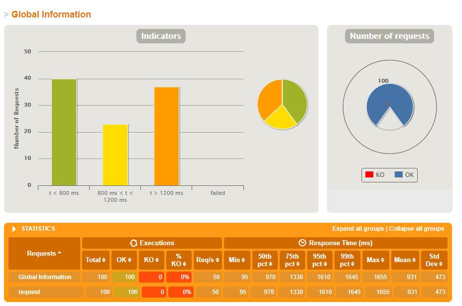
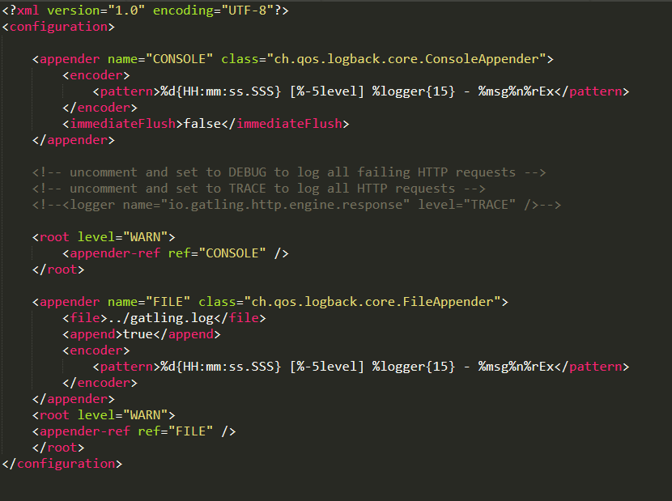
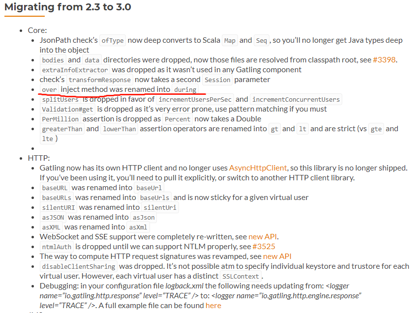
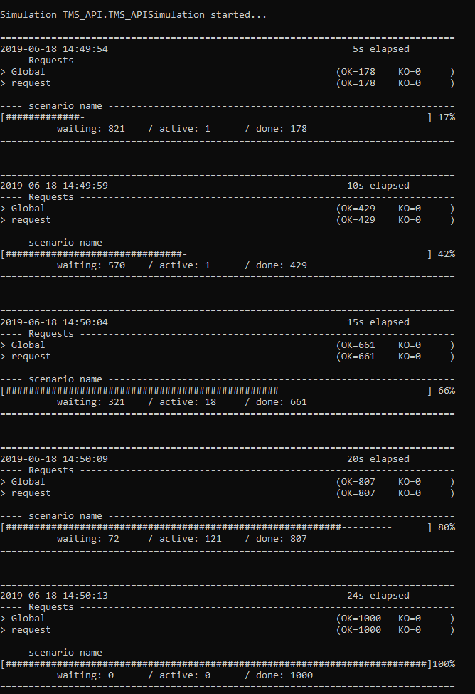
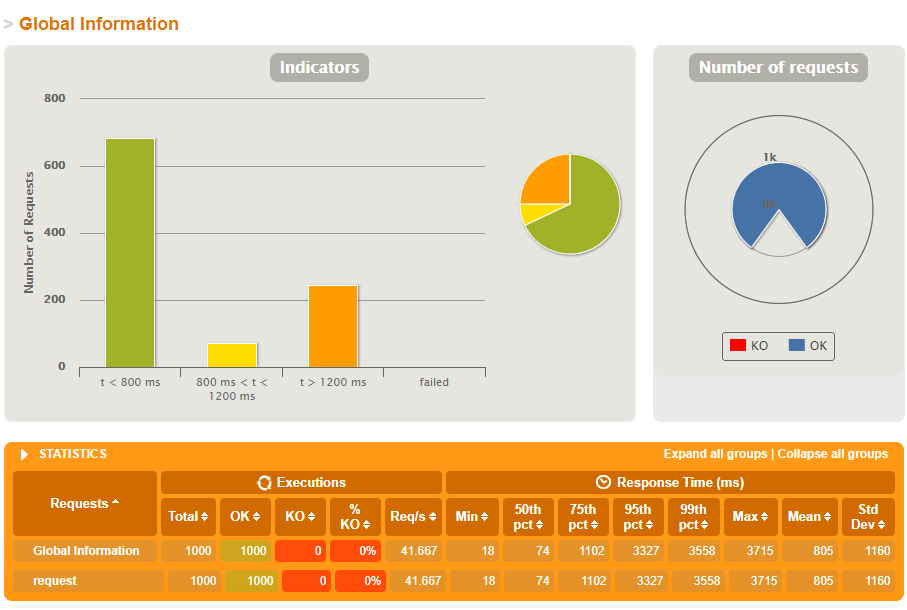
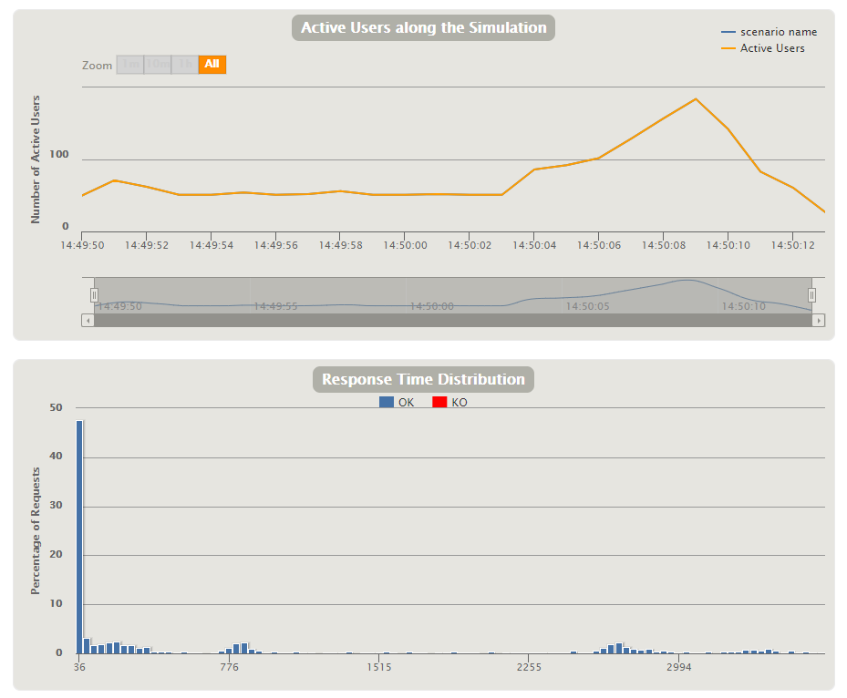

How to use Gatling load testing tool
What is load testing
load and stress testing. Load testing verifies how the system function under a heavy number of concurrent clients sending requests over a certain period of time. However, the main goal of that type of tests is to simulate the standard traffic similar to that, which may arise on production. Stress testing takes load testing and pushes your app to the limits to see how it handles an extremely heavy load.
使用一些load testing tool往往比自己写一个console application来test要有效，不单单是因为它提供很多可视化的图标可以参考在正常情况下用户的访问情况，还因为它对用户访问处理的算法也更好，可以模拟同时访问的情况而不同我们自己写平行运算。
Gatling
这次我选的是Gatling。一是因为它是免费的，二是因为它提供很多可视化图表
文件解压后可以看到这些文件夹，其中bin包含程序本身的运行文件。conf是程序的配置文件config，results会有每次测试的报告，一开始应该是空的。user_file是用户的测试配置文件，里面有两个文件夹，一个是resources，所有用到的关联文件类似csv file都应该放在里面。还有就是simulations，这个就是每次测试的配置文件，使用scala写的。但是也很容易懂。
scala文件就长这个样子，需要注意的就是baseUrl，feeder file students.csv，get后面的url剩余部分，还有就是setup里面的同时访问数量。现在我们没有用到任何csv file，但是如果有用到就把他放在resources文件夹里
然后进入bin并运行gatling.bat
选择一个simulation
我们可以看到100个request都完成了
图表也非常丰富
接下来我们看看如果模拟1000个不同的用户在接下来的20秒，因为不需要同时接受1000个用户，所以我们更改setup，使用rampUser
1 | setUp(scn.inject(rampUsers(1000) over (20 seconds)).protocols(httpProtocol)) |
运行报错，但是用console看起来太不方便了。我们更改下config让他把error log导出到一个文件中
找到logback.xml,然后更改成这样，这样每次报错就会生成gatling.log
打开log发现他说：value over is not a member of io.gatling.core.Predef.RampBuilder。 说明没有识别关键词over，google一下这句话。发现是因为这个是旧版本的语法了。。。可是官方guide居然还没有更新。。。
好吧找到migration guide，发现over被替换成during了。。嗯。。真好
重新运行一下gatling.bat，现在行了，还挺像模像样的
现在大部分request都小于800ms
细看的话，同时在线人数基本在50以上，我们用不到那么多。。。并且将近一半的request其实只用了36ms。。
